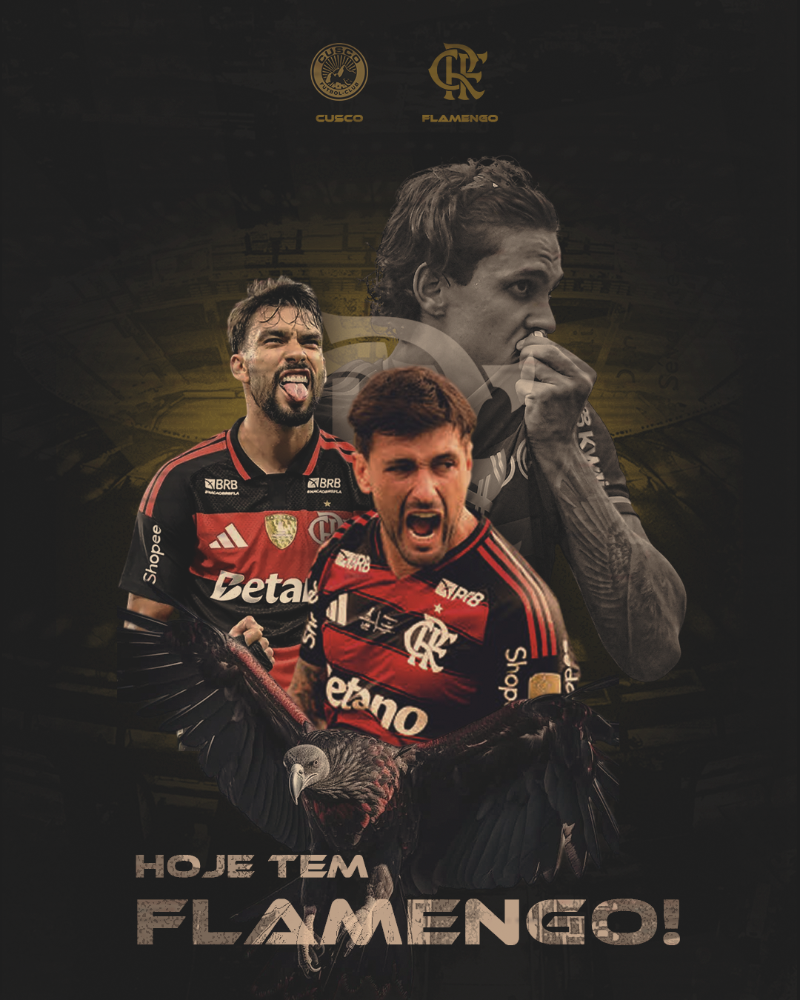

Designer Gráfico Esportivo – Artes Profissionais para Clubes e Redes Sociais
Se você está procurando um designer gráfico esportivo profissional, eu estou oferecendo meus serviços como designer gráfico especializado na criação de artes para clubes, atletas e páginas esportivas. Desenvolvo designs personalizados e estratégicos para redes sociais, com foco em engajamento, identidade visual e fortalecimento da marca esportiva.

No cenário atual, times como o Flamengo, Corinthians, Palmeiras, São Paulo, Santos, Vasco da Gama, Grêmio, Internacional, Cruzeiro e Atlético Mineiro investem cada vez mais em comunicação visual para se destacar nas redes sociais. Um design profissional é essencial para atrair torcedores, gerar engajamento e valorizar o conteúdo esportivo.
Artes Esportivas para Redes Sociais
As redes sociais são fundamentais para clubes e páginas esportivas. Por isso, crio artes ideais para Instagram, Facebook e outras plataformas, garantindo qualidade, impacto visual e organização das informações.
Posts de escalação, resultados de jogos, anúncios de contratações e artes comemorativas precisam chamar atenção rapidamente. Um bom design faz com que o conteúdo se destaque no feed e alcance mais pessoas.
Design para Clubes e Times Amadores
Além de grandes clubes como Flamengo, Palmeiras e Corinthians, também desenvolvo artes para times amadores, escolinhas de futebol e campeonatos locais. Todo projeto é tratado com profissionalismo, independentemente do tamanho do time.
Ter uma identidade visual bem definida ajuda o time a transmitir mais credibilidade, organizar suas redes sociais e atrair mais visibilidade para jogos e eventos.
Artes de Futebol Profissional
O futebol é um dos esportes mais populares do Brasil, e a apresentação visual faz toda a diferença. Inspirado em clubes como São Paulo, Santos e Vasco, desenvolvo artes modernas, com estilo profissional e alinhadas às tendências do design esportivo.
Se você quer manter um padrão visual de alto nível, também pode utilizar arte para redes sociais em todas as suas publicações.
Tipos de Artes Esportivas
Os principais tipos de artes que desenvolvo incluem:
- Artes de escalação
- Resultados de jogos
- Tabelas de campeonatos
- Artes de contratação
- Posts comemorativos
- Banners esportivos
Cada arte é criada com foco em clareza, impacto visual e valorização das informações mais importantes.
Processo de Criação
1. Envio das informações
Você envia os detalhes do projeto, como nomes dos jogadores, escudo do time, cores, campeonato e referências.
2. Planejamento visual
Organizo os elementos de forma estratégica para destacar as informações mais relevantes.
3. Criação da arte
Desenvolvo o design com estilo moderno, inspirado em padrões profissionais utilizados por clubes como Flamengo e Palmeiras.
4. Ajustes e entrega
Após aprovação, realizo os ajustes finais e entrego o material pronto para uso.
Perguntas Frequentes (FAQ)
Você cria artes para times amadores?
Sim. Atendo tanto times amadores quanto páginas esportivas e projetos profissionais.
As artes são feitas para redes sociais?
Sim. Os designs são adaptados para Instagram, Facebook e outras plataformas.
Posso pedir vários tipos de artes?
Sim. É possível solicitar diferentes formatos, como escalação, resultados e anúncios.
O que preciso enviar?
Envie escudo do time, cores, nomes dos jogadores, informações do jogo e referências, se tiver.
O design realmente faz diferença?
Sim. Um design profissional aumenta o engajamento, melhora a apresentação do time e fortalece a marca.
Você segue o estilo dos grandes clubes?
Sim. As artes são inspiradas em padrões utilizados por clubes como Flamengo, Corinthians e Palmeiras.
Solicite agora seu Design Esportivo
Se você quer elevar o nível das suas artes esportivas e destacar seu time nas redes sociais, entre em contato agora mesmo e solicite um orçamento.
Caso queira saber mais sobre meu trabalho acesse esse link: Clebson Designer
Mais artes que já desenvolvi: Arte para açaíteria e Arte para Igreja